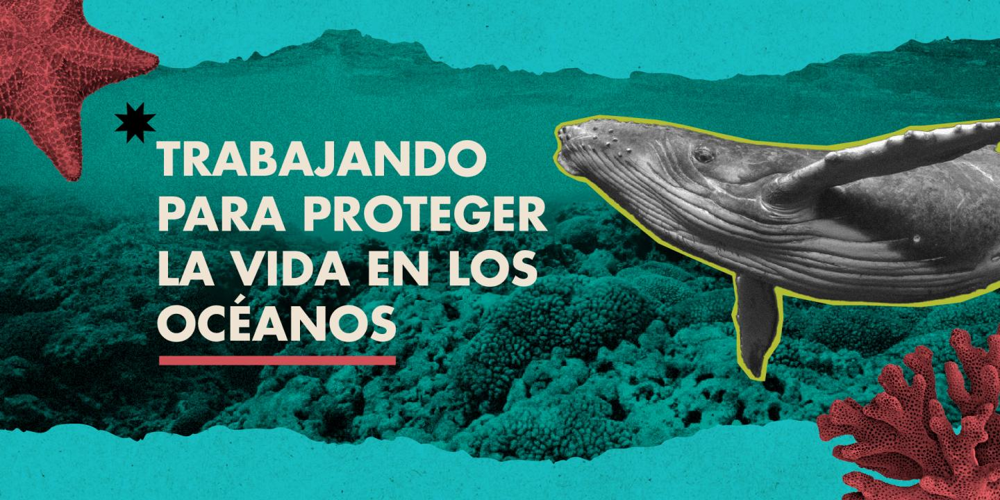

Formas de explorar y proteger el océano
Publicado el por Cristian

El océano es fundamental para la vida en nuestro planeta. Podemos conocerlo mediante diferentes actividades educativas y recreativas. También debemos aprender a proteger sus ecosistemas y reducir la contaminación.
Pasos para contribuir al cuidado del océano
- Reducir el uso de plásticos desechables y separar correctamente los residuos.
- Informarse sobre las especies marinas y los problemas ambientales.
- Participar en actividades de limpieza y conservación de playas.
Comparativa de formas de aprender sobre el océano
| Opción | Ventaja | Precio referencial |
|---|---|---|
| Documentales educativos | Permiten conocer especies y ecosistemas. | Gratis o variable |
| Recursos educativos digitales | Facilitan investigar desde cualquier lugar. | Gratis |
| Visitas a acuarios | Permiten observar especies y aprender directamente. | Variable según el lugar |